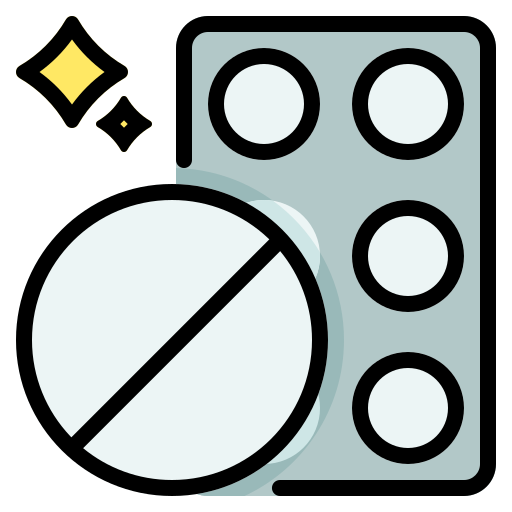

<link rel="stylesheet" href="https://fonts.googleapis.com/css2?family=Material+Symbols+Outlined:opsz,wght,FILL,GRAD@20..48,100..700,0..1,-50..200" />
<ion-header>
  <ion-toolbar>
    <ion-buttons slot="start">
		  <ion-back-button defaultHref="/buscar"></ion-back-button>
		</ion-buttons>
    <ion-title class="titulo">Paracetamol</ion-title>
  </ion-toolbar>
</ion-header>


<ion-content>
  <div class="card">
    <ion-card>
    <div>
      
    </div>
    <div class="icons">
      <div class="icon">
        <div class="circle">
          
        </div>
        <p>Pastilla</p>
      </div>
      <div class="icon">
        <div class="circle">
          
        </div>
        <p>Cada 6h </p>
      </div>
    </div>
    </ion-card>

    <ion-card>
      <ion-item lines="none" (click)="toggleSection('info')" >
        <ion-label>Para que sirve</ion-label>
        <ion-icon slot="end" name="add" color="primary"></ion-icon>
      </ion-item>
      <div *ngIf="expandedSection === 'info'" class="tex">
        <p>Sirve para reducir la fiebre y aliviar el dolor leve a moderado,
          como dolores de cabeza, dolores musculares, dolores de espalda, dolor de muelas,
          y dolores menstruales.</p>
      </div>
    </ion-card>
    <ion-card>
      <ion-item lines="none" (click)="toggleSection('uso')">
        <ion-label>Como usarlo</ion-label>
        <ion-icon slot="end" name="add" color="primary"></ion-icon>
      </ion-item>
      <div *ngIf="expandedSection === 'uso'" class="tex">
        <p> Se toma por vía oral con agua, y se debe respetar
          la dosis indicada para evitar efectos adversos.
        </p>
      </div>
    </ion-card>
    <ion-card>
      <ion-item lines="none" (click)="toggleSection('evitar')">
        <ion-label>Que personas no deben consumir</ion-label>
        <ion-icon slot="end" name="add" color="primary"></ion-icon>
      </ion-item>
      <div *ngIf="expandedSection === 'evitar'" class="tex">
        <p>Debe evitarse en personas con enfermedades hepáticas severas o alergia al paracetamol.</p>
      </div>
    </ion-card>
    <ion-fab slot="fixed" horizontal="end">
      <ion-fab-button>
        <span class="material-symbols-outlined">
          event</span>
      </ion-fab-button>
    </ion-fab>
  </div>
</ion-content>
